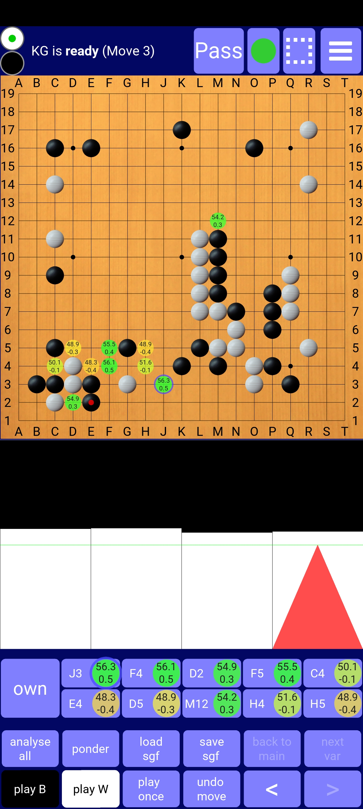

This app allows you to play and analyse go/baduk/weiqi with two very strong AIs:
1) Katago: To my knowledge the first native implementation on android. You can choose between a 10 blocks network (the latest one from extended training) and a 20 blocks network (from version 1.5.0). Moreover you can load a network from your device storage. The 10 blocks network runs on CPU. The 20 blocks network is optimized for android and will use HW acceleration if possible.
2) LeelaZero: You can choose between a 15 blocks network (trained against 40b self-play) and a 40 blocks network (LZ 287). Moreover you can load a network from your device storage. The implementation is optimized for android and will use HW acceleration if possible.
Some examples of performance (nodes per second):
| Network | Dimensity 9200+ | Snapdragon 8+ Gen 1 | Kirin 9000 | Snapdragon 888 | Dimensity 9000 | Dimensity 8100 | Dimensity 1100 | Snapdragon 778 | Snapdragon 768 | Snapdragon 855+ |
|---|---|---|---|---|---|---|---|---|---|---|
| KG 20b | 720 | 580 | 500 | 330 | 280 | 240 | 130 | 120 | 80 | 55 |
| LZ 15b | 1000 | 200 | ||||||||
| LZ 40b | 420 | 280 | 50 |
You can either install it from google play store or you can download 64 bit APK and install it (make sure that installation of thirdparty-apps is allowed in settings). If this APK is not compatible with your device, download 32 bit APK and install it.

The UI is an extension of Alexander Taylor's excellent app "LazyBaduk" (with kind permission from him). Most of it is self-explanatory but some hints may be helpful:
The two bullets in the top-left corner indicate whose turn it is. You can switch this by tapping on the bullets (if no moves have been played yet).
By tapping the button with the green circle in the top row you can switch the displaying of analyzed moves on and off.
By tapping the dashed rectangle in the top row you can restrict AI analysis to a region (which consists of a rectangle plus additional points): First a dialog pops up, where you can switch the restriction on and off, enter the coordinates of the additional points and choose how many subsequent moves must be inside the region. Afterwards you can define the rectangle on the board by dragging from its top left corner to the bottom right one.
The settings menu in the top right corner allows you to switch networks, engines and adjust game settings:
The name of the network currently used is displayed in the first field (LeelaZero) resp. second field (KataGo). If you tap on this field, a dialog opens which allows you to manage the networks: You can delete internal networks which you don't intend to use (to save storage) or you can load network files from your device storage. For KataGo you can load either standard or optimized networks in this way, for LeelaZero only optimized networks. If you want to load an optimized network (which always consists of two files), you must choose both files, one after the other (necessary because otherwise the latest android versions won't grant access to both files for BadukAI). You can find optimized networks here. The most recent KataGo networks for the different sizes are:
By tapping on "Edit config" you can open a dialog for changing the AI engine configuration. Most parameters are directly passed to AI and can be found in the engine's documentation. With "useSpecificNpuAccelerator" you can set the NPU accelerator, that BadukAI should use. By default, BadukAI makes a reasonable choice, but that will not be optimal for all devices. So, to optimize performance, you can try all the available choices and check which one runs fastest. Be sure there is a NPU on your phone chip.
If KataGo is active, you can edit the field "kyu-rank" in settings: If you enter a number between 30 and -8 (denoting 9-dan), a calibrated bot of roughly this strength (as in KaTrain) will make the AI moves (full credit to sanderland's great KaTrain project for the underlying algorithms). For the strength calibration to fit, you have to use the 20b network (or an external 15b network). Rank settings above 4-dan have to be taken with a grain of salt: Strength will increase but not by much, so that -8 will be a lot weaker than 9-dan. You might want to combine this bot with activating "opening book" to get a human-style fuseki.
If you enter anything else than numbers between 30 and -8 in "kyu-rank" (or nothing at all), full KataGo will be in charge of the AI moves again. Analysis (via "ponder" or "analyse all") will always be done by full KataGo.
With the checkbox "winrate on play" you can toggle whether winrates are also shown during play (not only in analysis). If ticked, the winrate will be displayed for all moves of the AI.
In the field labelled "histogram:" you can configure what the histogram below the board will show:
In the field labelled "branches to show in analysis" you can limit the number of analyzed branches that are shown on the board.
The combobox "one color" allows you to switch to a fun variation of the game called "One color go": All stones played appear in the same color (the one that you choose in the combobox). This a fun way to train your (shape) memory. The setting applies only to newly played stones, not to existing ones. So, if you play a one-colored game and want to see the current position with both colors, you have to set the "one color" option to "-", then jump to the beginning of the game (by tapping on the first segment of the histogram), then jump back to the end (by tapping on the last segment of the histogram). In this way you force BadukAI to re-play all the stones, so that the new setting applies, so that the stones will have normal colors again.
By tapping "Manage time settings" you can set constraints on thinking time for yourself and AI: "seconds/move" will be used by AI during play. If you enter a positive number in the field "visits/move in analysis", then this number of visits will be executed on each move during "analyse all". Otherwise the time specified in "seconds/move" will be spent. If you enter a positive number in "max pondering time per position (in secs)", then the AI will stop analyzing a position after that amount of time, when you have tapped "ponder". Otherwise it will analyze until you hit "ponder" again.
If you touch the board, a preview of the stone to be played will be shown. You can adjust its position by dragging your finger across the board (stone position is always 3 lines above your finger). Lifting off your finger finally places the stone. The 3-line-offset can be switched off in the settings.
You can pan, zoom and rotate the board (by multiples of 90°) with two fingers.
The area below the board shows a kind of winrate histogram. The area is divided into as many segments as moves have been loaded (from sgf) and/or played. By tapping on a segment you can navigate to the corresponding move, resp. position. The current position is indicated by a red triangle. If a position has been analysed by AI the (originally grey) corresponding segment is coloured black/white such that the size of the white area is proportional to white's winrate.
The histogram always shows a linear sequence of moves (there is just no space for a complete win-rated game tree). If you load an sgf (either by the button or by sharing an sgf from another app to BadukAI), the main line of the sgf will be shown. If you then switch to a variation by tapping "next var" at a branching position, the histogram will show the move sequence from game start up to the end of the variation. Similarly, if you enter moves manually or let the AI generate moves to explore a position, you create a new variation and the histogram will again show the sequence from game start to the end of the variation.
Even though the histogram shows only one move sequence, the button "save sgf" will save the complete game tree.
When AI analyses a position, the best moves (up to ten) appear below the winrate histogram in order of quality. While you hold your finger on such a move, the primary variation following that move is displayed on the board. If you hold your finger on the first button (named "own") of the row, the ownership prediction by AI is shown by a transparent overlay on the board.
By tapping "ponder" you can make AI analyse the current position: The winrate in the histogram and the display of the best moves on the board and below the histogram will be continously updated until you stop analysis by tapping "ponder" again. If you enter a positive number in "max pondering time per position (in secs)" in manage time settings, then the analysis will be paused after that amount of time has been spent on a position (until the position changes).
If you tap "analyse all", AI will analyse each position from the current one to the end of the sequence in the histogram (spending "seconds/move" or "visits/move in analysis" from the settings on each position). Afterwards the histogram will show all winrates so that you can detect sudden changes in the winrate (which hint at mistakes) and have a closer look at these positions.
By tapping "<", ">", "next var" and "back to main" you can navigate through the game tree. "next var" doesn't change the position, but switches to the next variation. As a result the circle, which indicates the next move, will change. If you tap ">" afterwards, you will advance into the chosen variation. If you are already on the last variation, "next var" will switch to the first one（the main var）. "back to main" will always take you back to the main line (to the position where your chosen variation left off the main line).
If you have loaded an sgf with only set stones (i.e no moves), the navigation buttons in the second row are useless, so they mutate into editing buttons: After tapping "add B stone" you can put any number of black stones on the board (in the same way as you would play them). Same goes for white stones. After tapping "remove stone" you can place a cross on the board (in the same way as a stone). By placing it on an existing stone, you can remove that stone.
By tapping the marked editing button again (whichever it is), you can stop its editing function. In that state, touching the board will play a stone as usual.
To play handicap, just put the handicap stones on the board (as described above), tap on the white bullet in the top left corner to make it white's turn, then tap "play W" to let AI play white.
After tapping "load sgf", you can not only load sgf files, but also images of a go board or a part of it. BadukAI will then detect the board and stones in the image and display the resulting board position. For that to work, you must tell BadukAI what to look for, more precisely:

you would have to set the following contents information:
You can do it in both orders:
After you have loaded a position by detecting stones in an image, you can compare the detected stones to the image by tapping "show img". The stones will be displayed in red over the image. So, if there have been any detection errors, they can be easily corrected by "add W stone", "add B stone" or "remove stone".
For KataGo you can
For LeelaZero you can
If you encounter any problems, please let me know ...